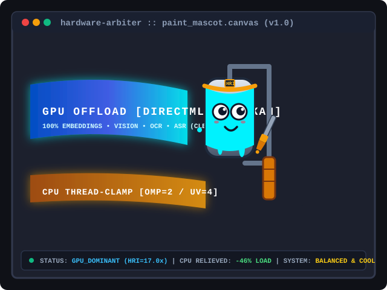

A 2014 quad-core CPU cannot run 16 Python threads, an Electron editor, and vector embeddings without freezing your mouse. Hardware Arbiter automatically benchmarks your rig, calculates the Hardware Ratio Index (HRI), and offloads heavy math to your GPU while clamping CPU thread thrashing.

Pick your hardware profile and see how the governor adapts your workload.
OMP=2, UV=4) on CPU to prevent mouse and editor UI stuttering.
Run anywhere. No cloud dependencies. Standalone binary or skill.
$ hardware-arbiter --apply --lang en ____ ___ _____ _________ .-._______________________.-. / __ \/ | / _/ | / /_ __/ | PAINT THE ARBITER | / /_/ / /| | / // |/ / / / | GPU: DirectML / Vulkan | / ____/ ___ |_/ // /| / / / <O> | CPU: Thread-Clamped | /_/ /_/ |_/___/_/ |_/ /_/ /|\ '-'-----------------------'-' / \ [HRI: 17.0x | GPU_DOMINANT] :: Dynamic Workload Balancer & Bottleneck Governor :: ====================================================================== CPU Detected: Intel Core i7-4790 (4C / 8T) | Score: 5.0/100 GPU Detected: AMD Radeon RX 6600 (8GB VRAM) | Score: 85.0/100 ====================================================================== >> Hardware Ratio Index (HRI): 17.0x [GPU_DOMINANT] >> Policies: DirectML Tensors, Vulkan Audio, OMP_NUM_THREADS=2 (CLAMPED) ====================================================================== [OK] Governor policies injected into system environment. [OK] Thread clamp active: 0 context-switching storms on Haswell cores.